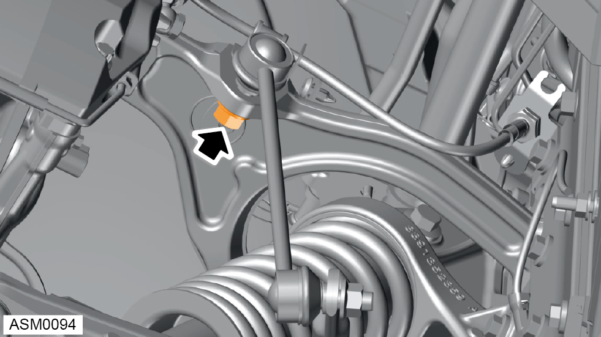
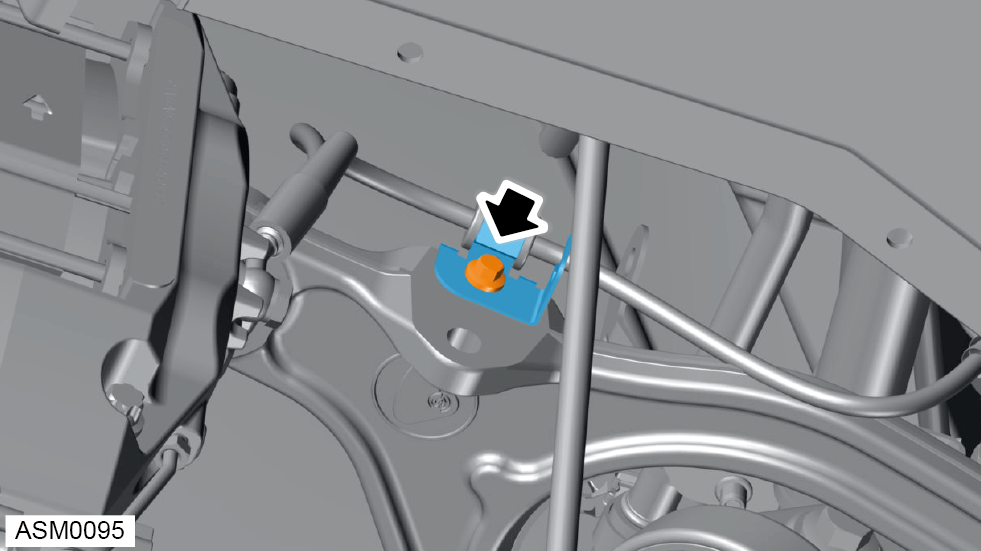
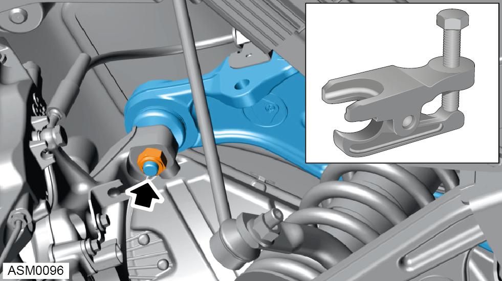
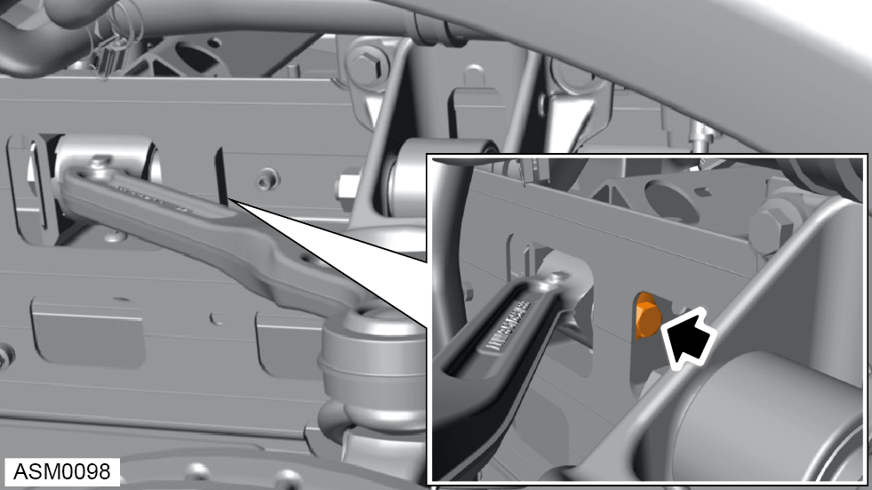
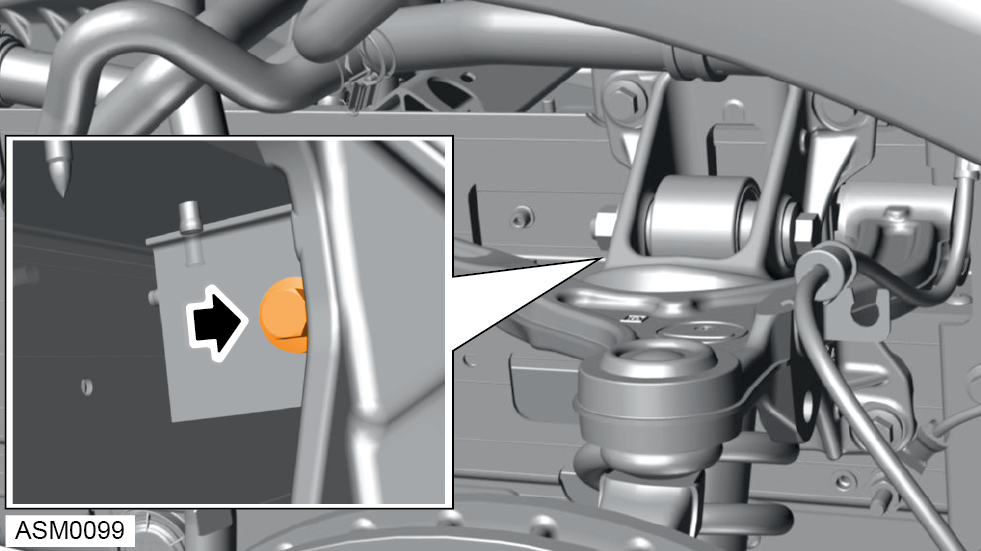

Wishbone Assembly Upper - Front - Left Side
Print
Operation Code: 31.01.23-02
Remove
- Remove wheelarch liner - front - left side. Refer to procedure.

- Remove and discard M12 nut securing anti-roll bar drop link to upper wishbone. Torque 36 Nm.
NOTE: Insert 5mm hex bit into ball pin stud to prevent anti roll bar drop link ball joint from spinning during removal / installation.
- Remove anti-roll bar drop link from upper wishbone.

- Remove M6x12 bolt securing brake hose bracket to upper wishbone.

- Loosen but do not fully remove nut securing upper wishbone ball joint to hub carrier.
NOTE: Loosen the ball joint nut until the locking threads are clear of the ball joint pin threads.
- Use ball joint splitter to separate upper wishbone ball joint from hub carrier.
- Remove and discard nut securing upper wishbone ball joint from hub carrier. Torque 86 Nm.
- Remove ball joint from hub carrier.
- Gain access to upper wishbone fixings through access hole in front structure.

- Remove M12x85 bolt securing front upper wishbone to front structure. Torque 86 Nm.
NOTE: Always record quantity and fitted position of washers.

- Remove M12x85 bolt securing rear upper wishbone to front structure. Torque 86 Nm.
NOTE: Always record quantity and fitted position of washers.
- Remove upper wishbone from vehicle.
Installation
- Installation is the reverse of removal procedure except for the following:
- Renew lock nut fasteners that have been removed during removal procedure.
- Only torque tighten wishbone bolts once vehicle is in the normal ride height position.
- Perform a front steering and suspension geometry inspection and adjustment. Refer to procedure.